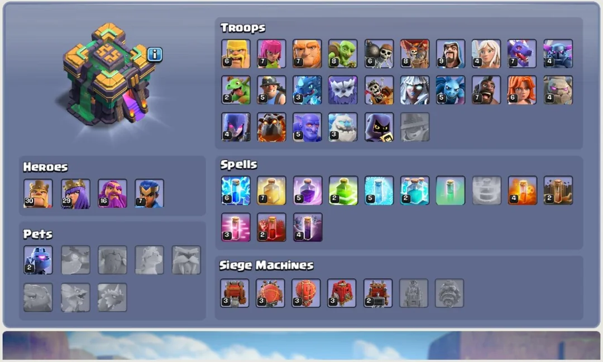
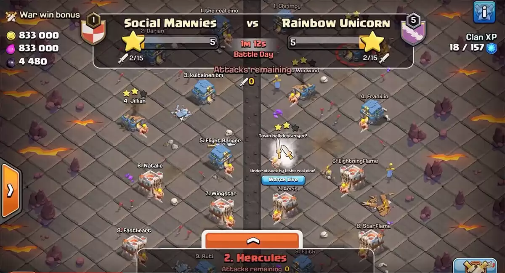
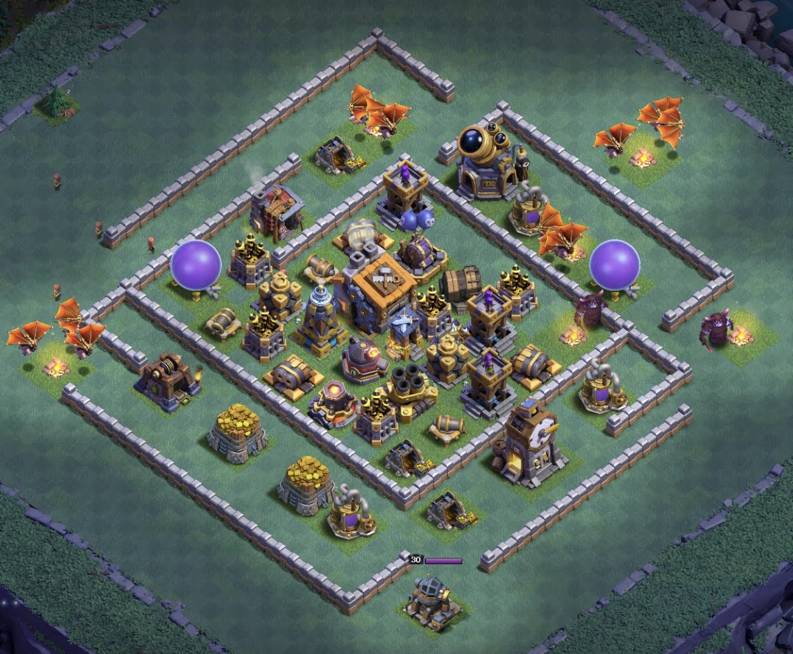
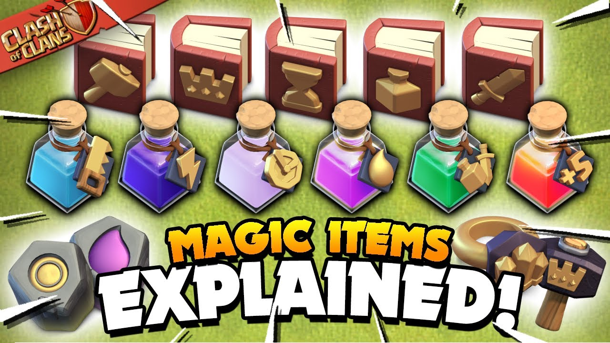

Clash of Clans is a 2012 free-to-play mobile strategy video game developed and published by Finnish game developer Supercell. The game was released for iOS platforms on August 2, 2012, and on Google Play for Android on October 7, 2013.
Clash of Clans was released to generally positive reviews from critics. Four spin-off games in the same universe of Clash of Clans were developed by Supercell. The first, Clash Royale, was released in 2016.
The other three, Clash Quest, Clash Mini, and Clash Heroes, were announced in April 2021. Clash Quest development was discontinued on 17 August 2022. On 13 March 2024, Supercell announced that development on Clash Mini would also end, but elements from it would be brought to Clash Royale
Clash of Clans is an online multiplayer game in which each player is a village chief. Every player builds their village by using resources and trains troops to attack other player villages to gain resources and trophies. Players can (and usually do) form communities called clans, which are groups of up to 50 people.
Clans players can donate troops to each other and can go on war with other clans. There are multiple currencies or resources in the game, including Gold, Elixir, Dark Elixir, Gems and 3 different ores, Shiny Ore, Starry Ore, and Glowy Ore. Gold and Elixir are used to build and upgrade buildings like defenses, resource collectors etc. Elixir and Dark Elixir are also used to upgrade troops and spells. In the past, they were also used to train the troops but since July 2022 training is made free. Gems are the premium currency. They can be earned by completing in-game achievements or bought using real money. The 3 ores are all used to upgrade the heroes, or hero equipment, at different levels. Attacks are rated on a three-star scale and have a maximum timed length of three minutes.
To perform any upgrade, an unassigned builder is needed. The player initially has two builders, but can have up to six builders. They are bought by using gems (up to 5th) and sixth is unlocked by completing a series of challenges in Builder base (another village)
.jpeg)
To earn and store gold and elixir, players must build mines and storage for each. Elixir is used to carry out research in the laboratory to upgrade troops, and to build and upgrade certain (mostly offensive) buildings. Gold is used to build defensive buildings and to upgrade the town hall, which allows access to more buildings and higher levels for existing buildings.
At Town Hall 7, dark elixir becomes available; this type of elixir is used to train and upgrade dark elixir troops, heroes such as the Barbarian King, and starting at Town Hall 8, create dark spells. To earn and store dark elixir, players must build dark elixir drills and dark elixir storages.
There are a number of buildings available to the player to defend their village, including cannons, mortars, archer towers, wizard towers, Inferno towers, an Eagle artillery, Scattershots, a Monolith, air defenses and spell towers. There are also traps including Tesla towers, bombs, giant bombs, tornado traps, seeking air mines, and air bombs.
Players can also build walls, which can be upgraded further as a player's town hall level increases. As the Town Hall level increases, the player gets access to stronger buildings such as the Monolith and the Eagle Artillery.
The game has two kinds of barracks and spell factories, a basic version and a "dark" version of each. Initially, the barracks were used to train troops using elixir, whereas dark barracks trained troops using dark elixir. However, an update in July 2022 made all troops free to train, with the primary limitation being space in the army camps.[17] Both sets of barracks can be upgraded to higher levels to unlock more troops (seventeen total troops for the barracks, and ten for the dark barracks). Introduced in March 2020, Super Troops are troops that are more powerful than their original counterparts and have special abilities. They can be boosted at the price of 25000 dark elixir, only a max of 2 at a time and for 3 days.[18] Town Hall 14 unlocks the Pet House, a building used to assign one of nine pets to heroes, each serving a different role in assisting a hero.[20] The Townhall 16 updates brought many new features: such as the root rider troop, the new overgrowth spell, two new pets: Spirit fox, angry jelly and a feature to merge defenses.[22][23][24] The Root Rider is unlocked at townhall 15 and allowed many more strategies for players. Alongside this was the overgrowth spell which allowed players to bypass a certain area of the village. The spirit fox pet made the hero it was paired with invisible every 4 seconds, and the angry jelly allowed the paired hero to only target defensive buildings. The merge defenses allowed players to take 2 defenses and merge them together creating a significantly stronger structure. However players could only merge two of the same building, which the only allowed buildings were archer towers to create multi-archer towers, and cannons to create ricochet cannons.
The available war sizes are 50v50, 40v40, 30v30, 25v25, 20v20, 15v15, 10v10, and 5v5. There were previously 35v35 and 45v45 sizes as well, but these were removed in the March 2016 update.[30][31][32] In the May 2016 update, Friendly Challenges were introduced to allow clanmates to compete amongst other clanmates - however, these challenges do not provide loot or trophies and do not affect a player's army.[33] In the October 2018 update, Clan War Leagues were introduced. Clans can fight seven other clans to advance to the next league and earn league medals by earning stars in Clan War Leagues. The clans in the group with the most stars will be promoted to a higher league, while the clans in the group with the least stars will be demoted to a lower league.
Following an update on May 22, 2017, Supercell released the new "Builder Base" game mode to the game. It allows players to sail to a new island and create a new village with a different set of buildings.
Players can spend gems to speed up the in-game time (which can be mined in the Gem Mine) or by using the Clock Tower (temporarily speeds the process in the entire Builder Base). A new hero, the Battle Machine, was also introduced along with this update. In June 2019, Builder Hall level 9 was released. The May 2023 update brought Builder Hall 10, which is currently the highest Builder Hall level. The May 2023 update also brought the long-awaited Builder Base 2.0 level, with higher Builder Base levels having multiple levels to beat, and introducing many changes to the Builder Base. O.T.T.O, a secondary builder in the Builder Base, was also replaced by B.O.B in this update.
In December 2017, Supercell introduced Clan Games, a feature where clan members could work together to complete tasks, which would then earn clan points. When enough points are accumulated, a new reward tier unlocks, and players can select one reward from each unlocked tier. This update also introduced Magic Items, obtainable as rewards from Clan Games and through events. These items can be used e.g. to get resources, finish upgrades, or briefly add levels to troops or heroes.
Clash of Clans was developed by Supercell, the company behind other popular mobile games like Hay Day and Brawl Stars.[40] The game took six months to develop with the gameplay changing little over the course of development. According to Supercell's Lasse Louhento, the development team encountered no major hurdles during this time. Inspiration for the game included the games Backyard Monsters and Travian with the art style being influenced by old Super NES and arcade games. Initially, the art style was more cartoon based, but this was changed as the team worried it would alienate the more hardcore segment of their audience. Throughout most of development the game was multiplayer-only - however, after focus testing, Supercell added a single-player mode. The game was released for iOS platforms on August 2, 2012,[1] and on Google Play for Android on October 7, 2013.
In February 2015, Supercell released their Clash of Clans Super Bowl XLIX commercial, featuring Liam Neeson parodying his character from Taken. On February 2, Business Insider reported the ad as the fifth most watched Super Bowl ad,[44] though on February 6, VentureBeat reported the ad was the most viewed of those that appeared on the Super Bowl. YouTube users later voted the advertisement the second best Super Bowl ad, behind Nissan's "With Dad" ad.
On September 23, 2015, Taiwanese singers JJ Lin and Jimmy Lin released the game's theme song "全面开战" ("Fight on All Fronts" in English), which was sung in Mandarin.
.jpg)